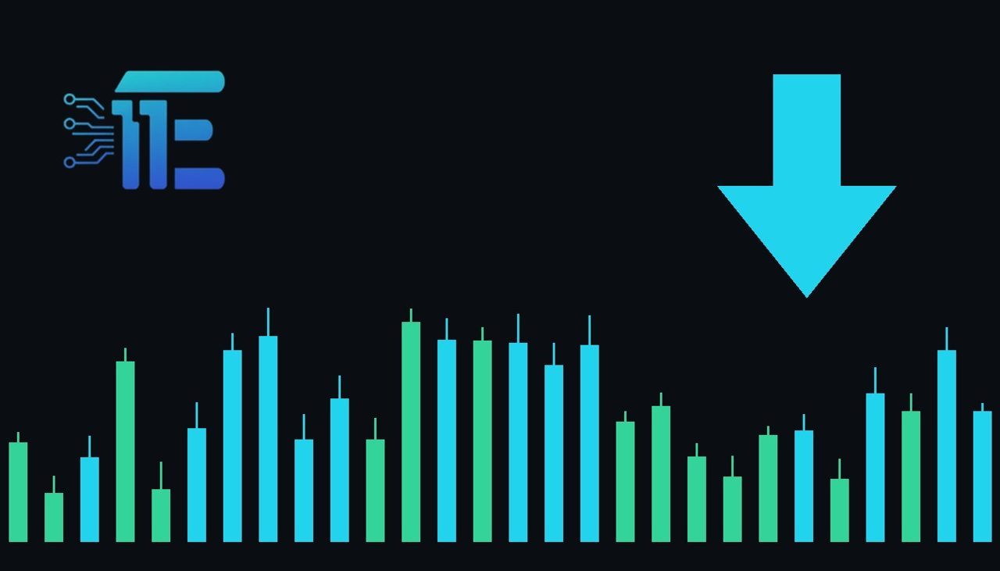

Gold Slides Toward $4,000 as Inflation Hedge Status Fadesតម្លៃមាសធ្លាក់ចុះខិតជិតដល់កម្រិត 4000 ដុល្លារ ដោយសារតួនាទីការពារអតិផរណាថយចុះ
XAU/USD impact: ▼ Bearishផលប៉ះពាល់លើ XAU/USD: ▼ ធ្លាក់

Bullion prices extended their October slide closer to $4,000 as investors sought alternative safe havens. This shift highlights changing market dynamics as crude prices surge and stock pulls back.
តម្លៃមាសបានបន្តធ្លាក់ចុះក្នុងខែតុលាខិតជិតដល់កម្រិត 4000 ដុល្លារអាមេរិក ខណៈអ្នកវិនិយោគស្វែងរកទ្រព្យសកម្មសុវត្ថិភាពផ្សេងទៀត។ ការផ្លាស់ប្តូរនេះបង្ហាញពីភាពប្រែប្រួលនៃទីផ្សារចំពេលតម្លៃប្រេងឆៅកើនឡើងខ្ពស់។
Gold prices extended their October slide, with bullion slipping closer to the $4,000 an ounce mark. The downward movement came as investors sought other safe-haven assets amid a pullback in stocks and a worrying surge in crude prices.
តម្លៃមាសបានបន្តធ្លាក់ចុះក្នុងខែតុលា ដោយមាសដុំបានធ្លាក់ចុះខិតជិតដល់កម្រិត 4000 ដុល្លារក្នុងមួយអោន។ ការធ្លាក់ចុះនេះកើតឡើងខណៈដែលអ្នកវិនិយោគស្វែងរកទ្រព្យសកម្មសុវត្ថិភាពផ្សេងទៀត ចំពេលមានការធ្លាក់ចុះនៃទីផ្សារភាគហ៊ុន និងការកើនឡើងគួរឱ្យបារម្ភនៃតម្លៃប្រេងឆៅ។
The transmission channel to XAU/USD involves shifting investor behavior regarding safe-haven allocation and inflation hedging. While rising crude prices typically signal inflationary pressures, gold faced downward pressure as market participants pivoted toward alternative safe-haven assets instead of traditional bullion.
ច្រកបញ្ជូនទៅកាន់ XAU/USD ពាក់ព័ន្ធនឹងការផ្លាស់ប្តូរឥរិយាបថរបស់អ្នកវិនិយោគទាក់ទងនឹងការបែងចែកទុនសុវត្ថិភាព និងការការពារអតិផរណា។ ខណៈពេលដែលការកើនឡើងតម្លៃប្រេងឆៅជាទូទៅបង្ហាញពីសម្ពាធអតិផរណា មាសបានជួបប្រទះសម្ពាធច្រាសមកវិញ ដោយសារអ្នកចូលរួមទីផ្សារបានបង្វែរទិសដៅទៅរកទ្រព្យសកម្មសុវត្ថិភាពផ្សេងទៀតជំនួសឱ្យមាសដុំបែបប្រពៃណី។
On one hand, persistent crude price surges and broader economic uncertainties could eventually renew demand for gold as a traditional inflation hedge. On the other hand, a continued rotation into alternative safe-haven assets and weakness in equity markets can increase downward pressure on the metal.
ម្យ៉ាងវិញទៀត ការកើនឡើងតម្លៃប្រេងឆៅជាបន្តបន្ទាប់ និងភាពមិនប្រាកដប្រជាទូទៅនៃសេដ្ឋកិច្ច អាចនឹងជំរុញឱ្យមានតម្រូវការមាសឡើងវិញជាឧបករណ៍ការពារអតិផរណា។ ម្យ៉ាងវិញទៀត ការបន្តបែរទៅរកទ្រព្យសកម្មសុវត្ថិភាពជំនួស និងភាពខ្សោយនៅក្នុងទីផ្សារភាគហ៊ុន អាចបង្កើនសម្ពាធធ្លាក់ចុះលើតម្លៃមាសបន្ថែមទៀត។
Traders should watch broader commodity trends, particularly crude oil movements, alongside equity market performance and shifts in safe-haven capital flows to gauge the next directional move for XAU/USD.
អ្នកជួញដូរគួរតែតាមដាននិន្នាការទំនិញទូទៅ ជាពិសេសចលនាតម្លៃប្រេងឆៅ ព្រមទាំងដំណើរការទីផ្សារភាគហ៊ុន និងការប្តូរទិសដៅទុនសុវត្ថិភាព ដើម្បីវាស់វែងទិសដៅបន្ទាប់សម្រាប់ XAU/USD។
Key takeawaysចំណុចសំខាន់ៗ
- Gold prices slipped closer to $4,000 amid a broader October slide.
- តម្លៃមាសបានធ្លាក់ចុះខិតជិតកម្រិត 4000 ដុល្លារអាមេរិកក្នុងអំឡុងពេលធ្លាក់ចុះខែតុលា។
- Investors rotated toward alternative safe havens as crude prices surged.
- អ្នកវិនិយោគបានបង្វែរទិសដៅទៅរកទ្រព្យសកម្មសុវត្ថិភាពផ្សេងទៀតចំពេលតម្លៃប្រេងឆៅកើនឡើង។
- Traders are monitoring energy markets and safe-haven flows for direction.
- អ្នកជួញដូរំពុងតាមដានទីផ្សារថាមពល និងចរន្តទុនសុវត្ថិភាពសម្រាប់ទិសដៅទីផ្សារបន្ត។
Original commentary by THE MARKET CODE, based on public reporting from Yahoo! Finance: GC=F News. Written with the help of AI. Educational only, not financial advice.
មតិវិភាគដើមដោយ THE MARKET CODE ផ្អែកលើការរាយការណ៍សាធារណៈពី Yahoo! Finance: GC=F News។ សរសេរដោយមានជំនួយពី AI។ មាតិកាអប់រំប៉ុណ្ណោះ មិនមែនជាដំបូន្មានហិរញ្ញវត្ថុទេ។